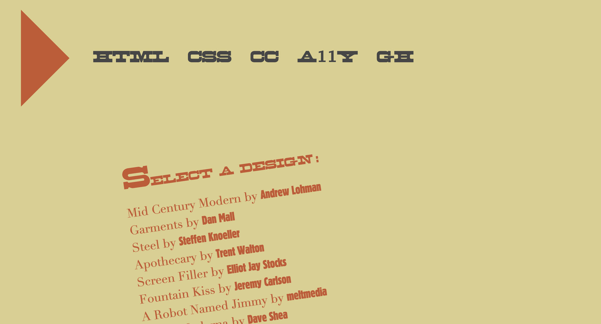
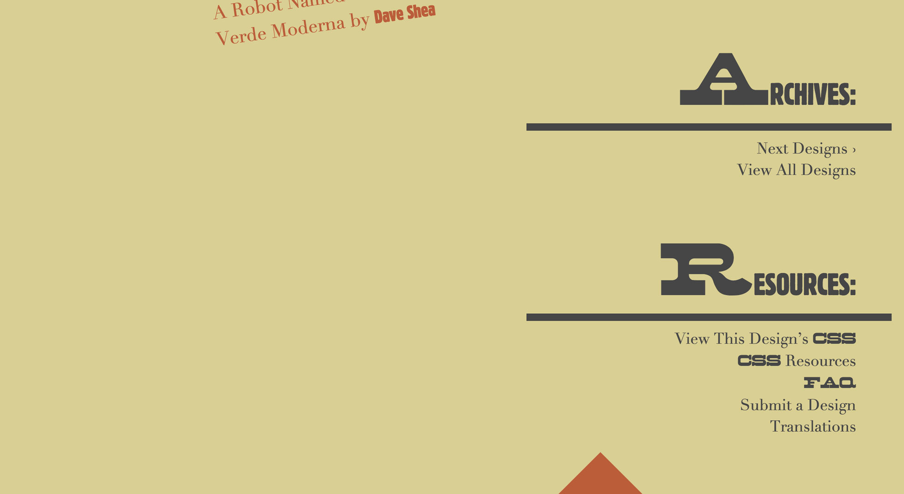
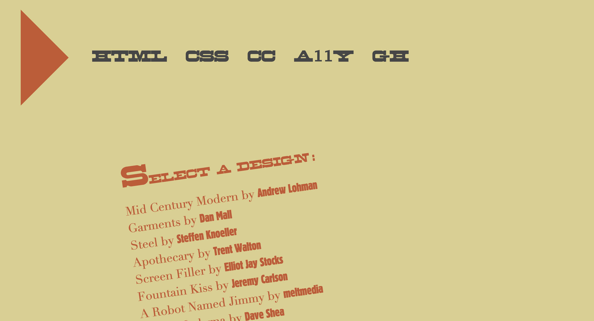
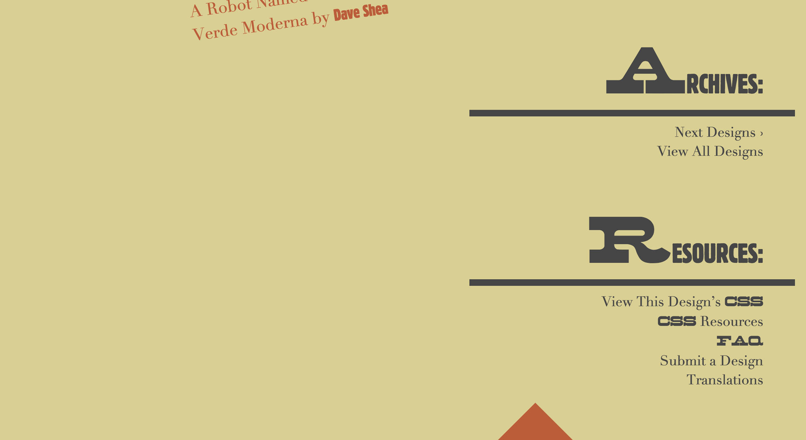
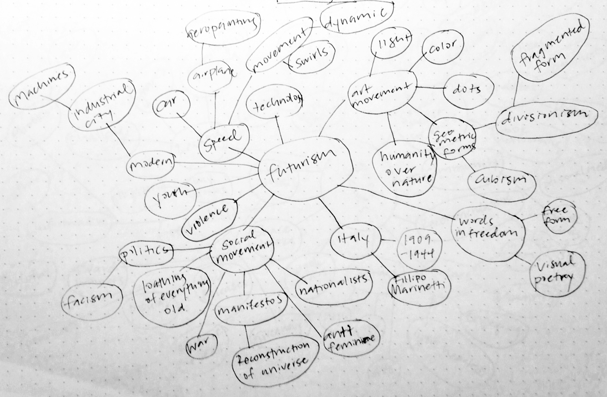
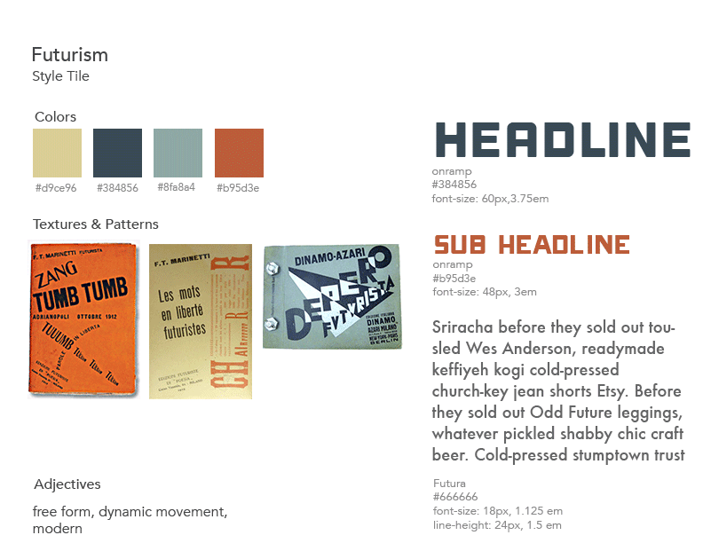

Project Brief
Completing CSS Zen Garden is like a rite of passage for web designers. This project is an example of what can be created only using CSS. My influence for this project was Futurism and the free form visual elements of words-in-freedom. I used pseudo elements like :first-letter, :nth-child, :before and :after to bring extra elements to the site.
View the project live.
Tools Used
Sass, CSS Animation, Responsive Web Design
 



Process
To start the project, I researched Futurism and created a word list to generate ideas and concepts. I created styles tiles to explore different concepts, type and color options.
 